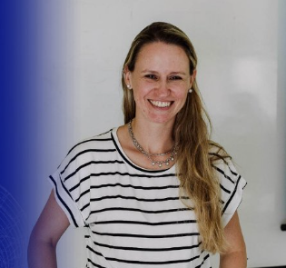
Astronomía
Florencia Vieyro
IAR · CONICET–CIC–UNLP
Agujeros negros: laboratorios de altas energías
Conocer trayectoria →
Conocé a quienes van a compartir sus investigaciones, experiencias y recorridos profesionales durante las tres jornadas de CIGMA.
Explorá los perfiles de nuestros expositores y conocé un poco más sobre sus trayectorias, áreas de trabajo y las charlas que van a compartir en CIGMA 2026.

IAR · CONICET–CIC–UNLP
Agujeros negros: laboratorios de altas energías
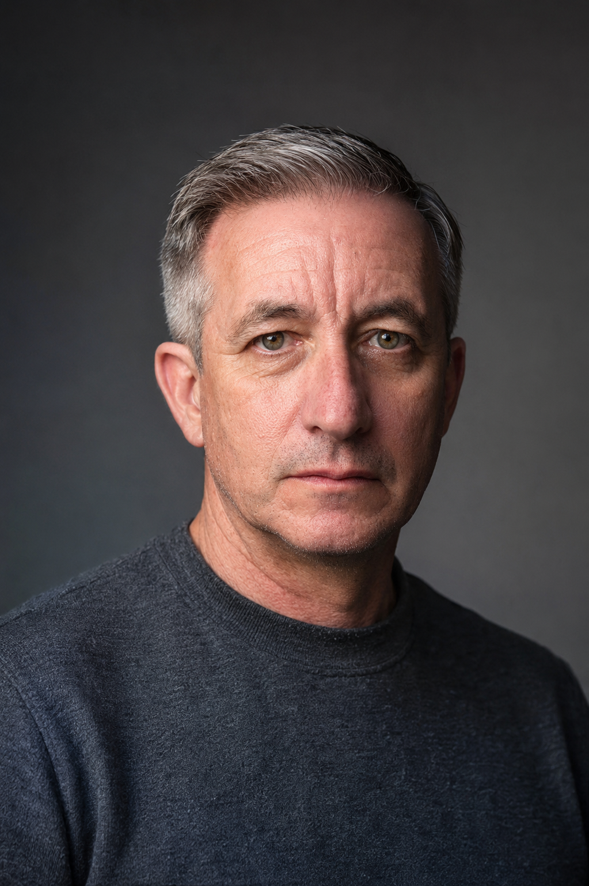
Institución a completar
Divulgación de la astronomía
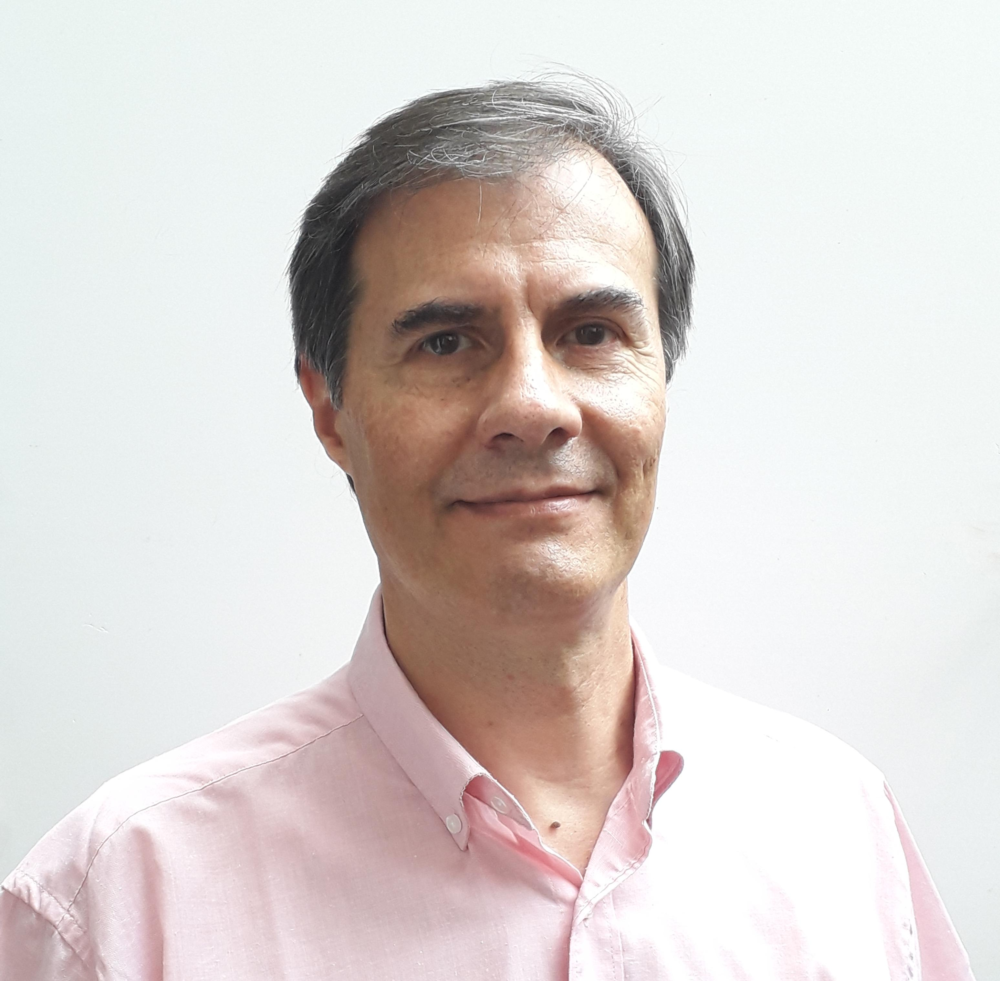
FCAG–UNLP · GEMAE
Tras los secretos de las estrellas más luminosas
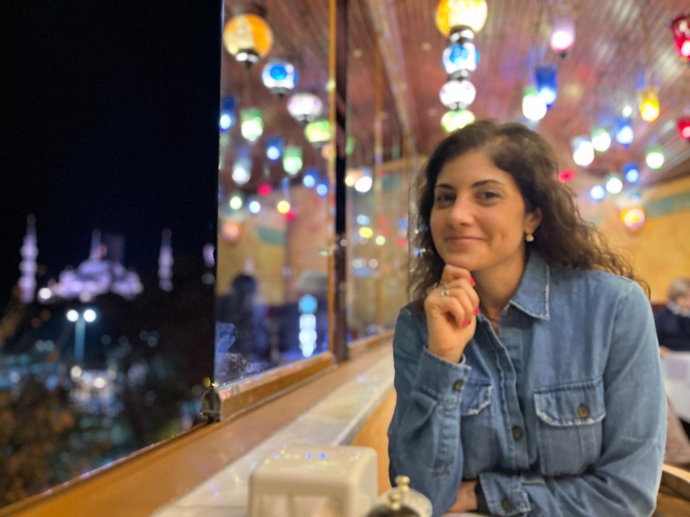
IAR · CONICET · UNLP
El universo antes de la expansión: modelos cosmológicos con rebote
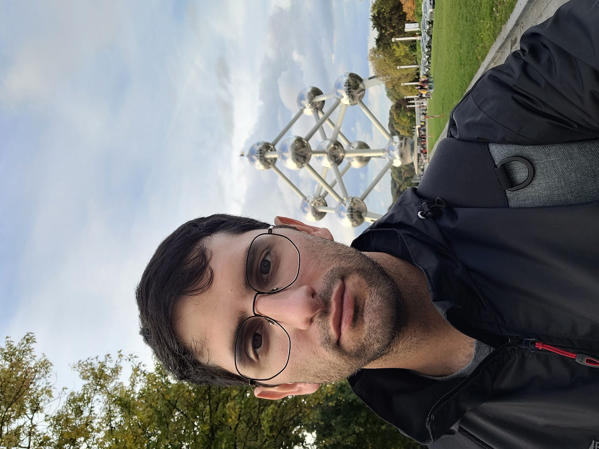
FCAG–UNLP · UNSAM · ITBA
Todo está en la luz: cómo caracterizamos exoplanetas sin verlos
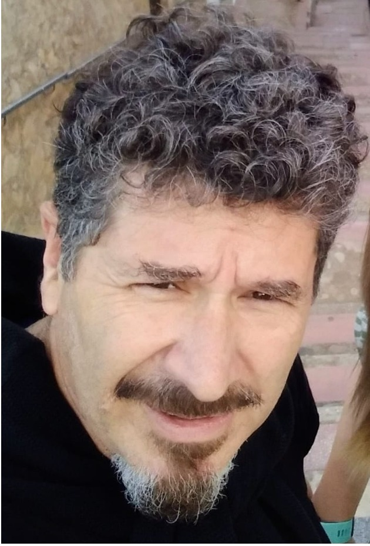
Institución a completar
Sistemas binarios de rayos X
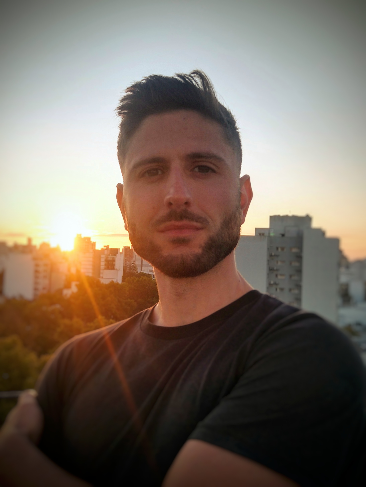
IAR · CONICET · FCAG–UNLP
Vibraciones del espacio-tiempo: astronomía, geofísica y meteorología en la investigación de ondas gravitacionales
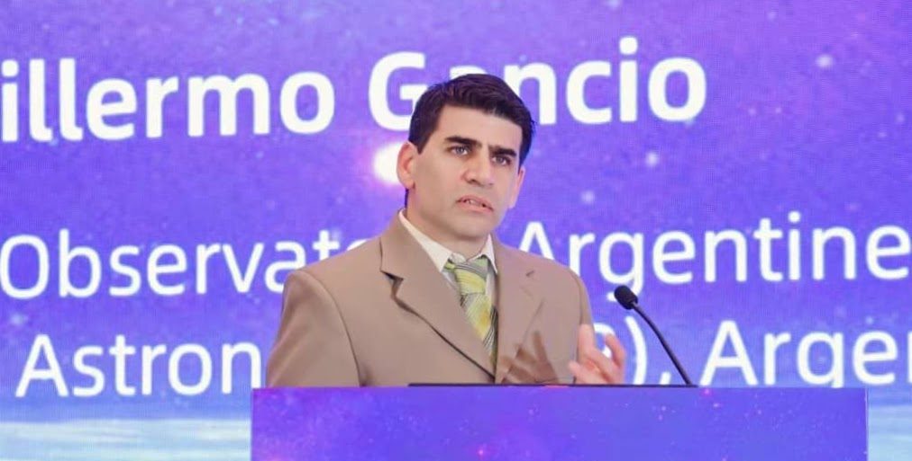
IAR · CONICET · CIC · UNLP
Pulsares en el tiempo: dos décadas de ciencia e ingeniería en el IAR
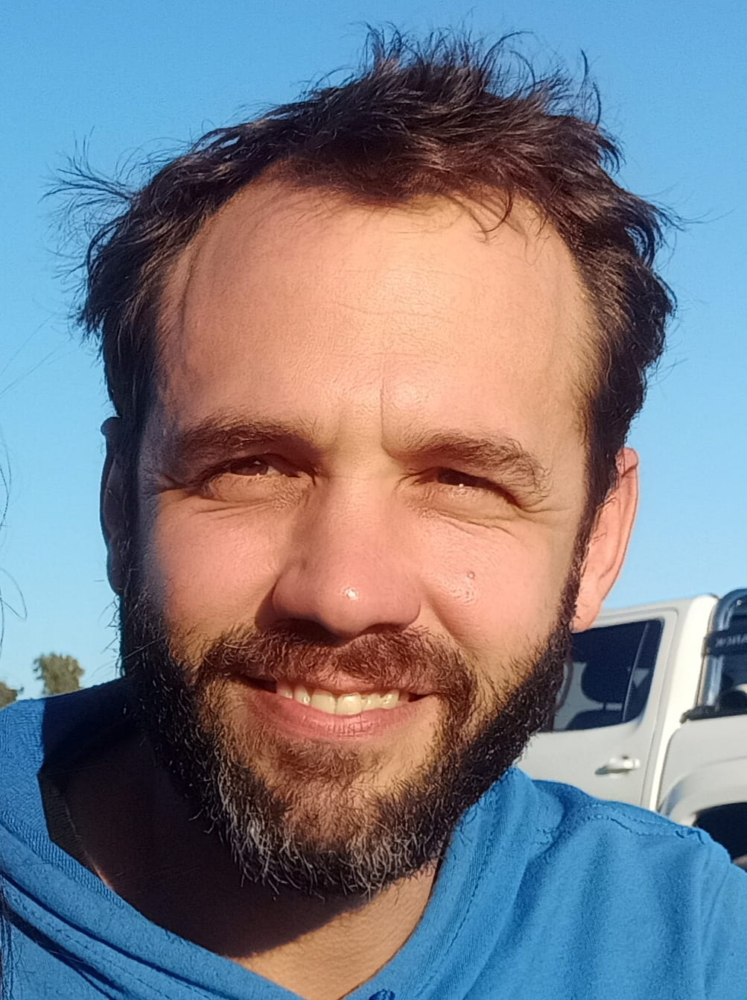
Institución a completar
Métodos geofísicos aplicados a la arqueología
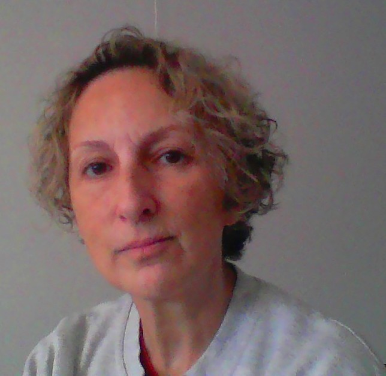
OAVV–SEGEMAR · FCAG–UNLP
Aprender el idioma de los volcanes
Escuchar sus señales para comprender su dinámica y anticipar sus cambios

Institución a completar
IA en la interpretación sísmica
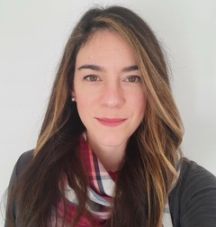
Pan American Energy
Del Caribe a Alaska y Patagonia: navegar incertidumbres y construir una carrera como geofísica en un mundo cambiante
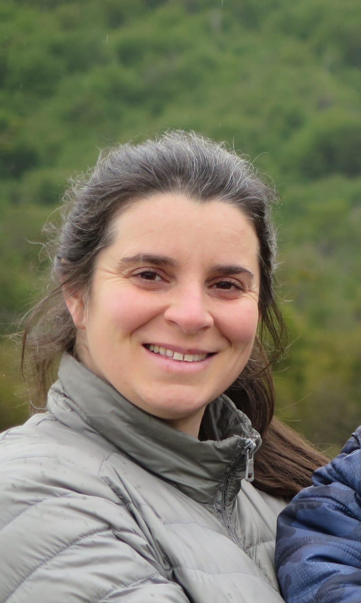
Institución a completar
Proyecto sismológico en la Patagonia Argentina
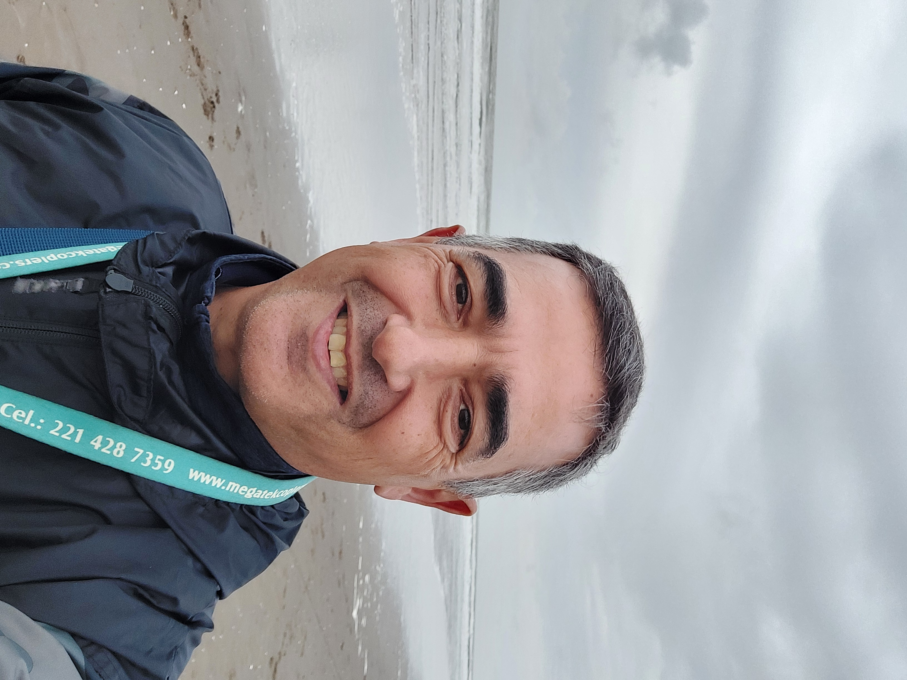
CIGEOF · CONICET · UNLP
Geocientíficos sin Fronteras: la Geofísica más allá de la industria y la investigación
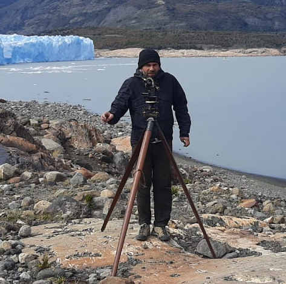
CONICET · FCAG–UNLP
Respuesta de la tierra y del mar al retroceso de los glaciares en la Patagonia
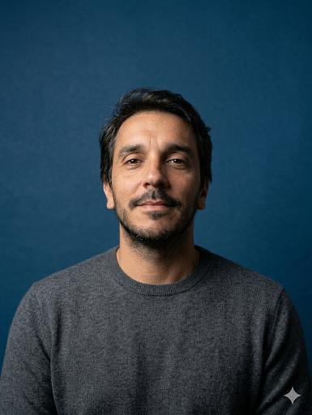
YPF · UBA · UNAB
Mi diario de supervivencia profesional

CLAVE
CLAVE
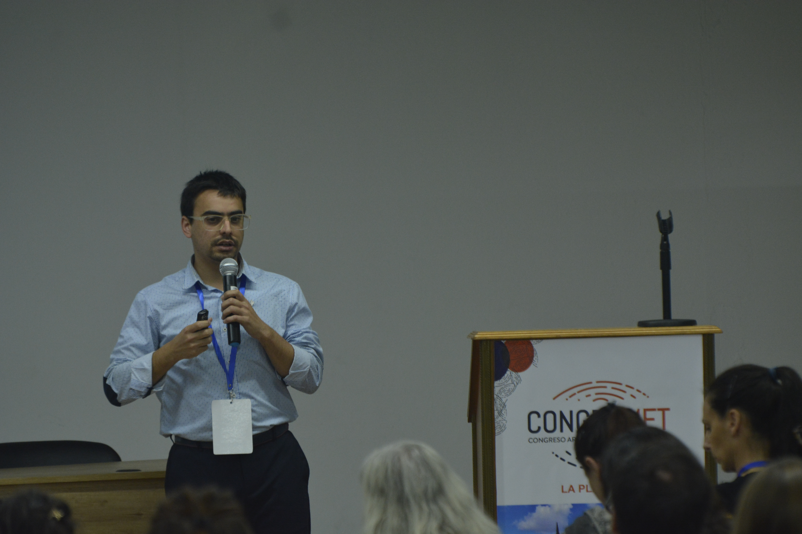
SMN · FCAG–UNLP
Mayday Mayday ceniza por los aires

Institución a completar
Cambio Climático
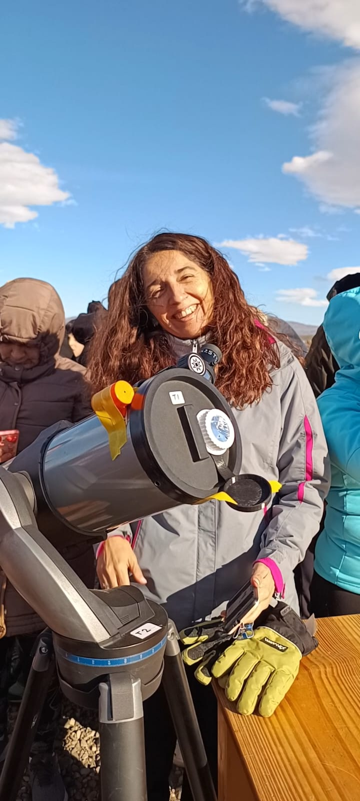
Institución a completar
GPS y vapor de agua

Institución a completar
Sistema de alerta temprana

Institución a completar
Actividad eléctrica
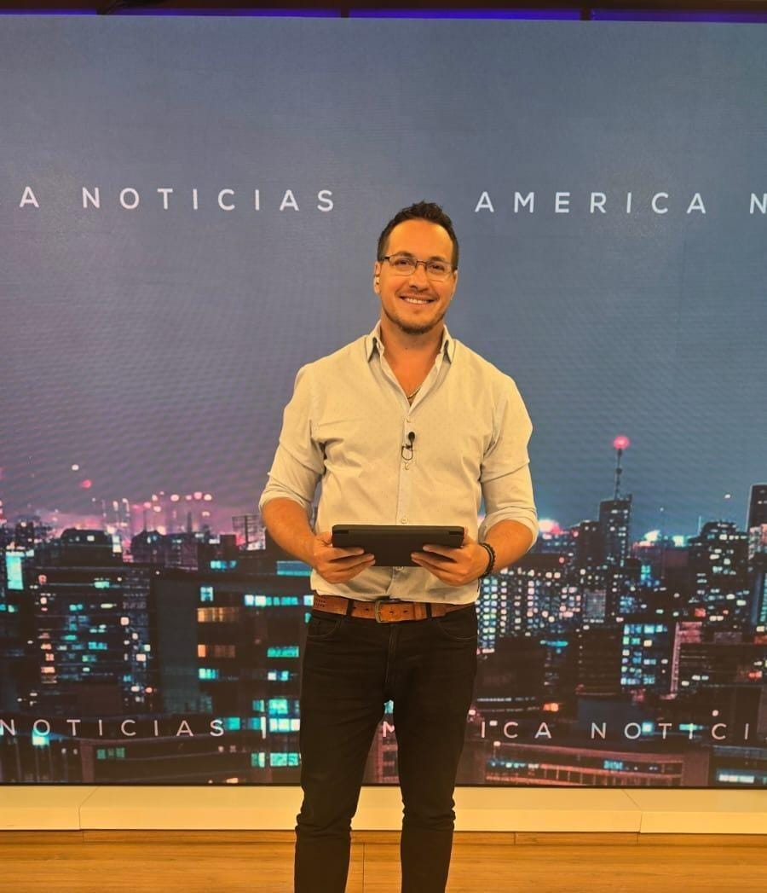
Institución a completar
IA y sus aplicaciones en la meteorología
Durante CIGMA también vas a poder conocer distintos institutos, observatorios, asociaciones y grupos de trabajo vinculados con la Geofísica, la Meteorología y la Astronomía.
Consultá el cronograma completo y encontrá el día y horario de cada exposición.
VER CRONOGRAMA →